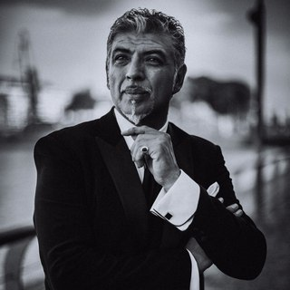

Elena, journalist . Of course, the first question will be about how you started dancing, why, etc. I remember you said you only started 20 years ago.
Julio Balmaceda. Yes, I've been dancing half my life. Started 20 years ago. My dad was a famous milonguero. I started to study with him at home because I was afraid to go to practice.
E. Why?
J. Because I was the son of Balmaceda!
E. And why did you start so late - if your father was a milonguero? Why, for example, not at 10 years old?
J. At first I was interested in other things. Of course, I knew that my father works in tango, but it was not so popular in 87-88. And then people started talking a lot about tango, and I became interested in what my father was doing.
E. Did your father dance the tango before that?
J. Yes.
E. Did he teach?
J. Yes, but only for seniors.
L. Those. did you become interested in tango when it became popular among young people?
J. Well, something like that. In fact, I started about 3 years before a lot of young people came to tango.
L. But you caught this trend.
J. Yes.
L. Were you interested at 15?
J. I knew that dad was a tango dancer, but at that time no one was talking about tango much. And then suddenly the wave “Argentine tango is back” swept through, there were many articles, large reports, discussions. Besides, I had another reason to start dancing. At that time my father was working in Caning. taught. Moreover, there were a hundred people in the lessons. There were no milongas then on Wednesdays. They cleared all the chairs and tables and danced all over Caning. Moreover, 100 people came to the lesson, and only 80 people paid for it. And my father suggested that my girlfriend, who was then unemployed, collect money at the entrance. She agreed, and of course I went along with her. And watched it all happen. And good dancers, I even remember Osvaldo Zotto, who took lessons from my father, asked me: “Who are you?”. I am the son of Miguel Balmaceda. Do you dance? -No. -What are you?? Yah! You are such a fool! And everyone talked to me like that. In the end, I thought: what is it, this is your tango? That is, I thought about dance, because I know music since childhood.
L. But you didn't go to Canning.
J. Of course, I had my own father at home. For free!
L. And what did he say? Did he want you to study?
J.He waited, waited, waited for me to ask him.
L. And when you asked him...
J. He was very happy. And as soon as I said that I wanted to dance, he immediately said, "OK, let's try." He was very happy. He saw my first performance.
L. Where?
J. In Canning with my ex-girlfriend. With the one who collected money for the lesson. Now she already has 3 children. She stopped dancing when we broke up. It was somewhere in 91.
L. Did you study for fun? Or was tango your future profession?
J. I never thought about it. Until people began to like what I did. Some people came up to me and said that I was a wonderful dancer, and I began to think about it. And in 1991 my dad asked me to help him in his lessons. In the middle of 92 my father died, I left tango and did not dance for a year.
L. Why?
J. I don't know. I had no reason to dance, there was no father, and besides, I broke up with the girl with whom I danced. And at 92, one of my father's students called me - I don't even know where she got my phone from and why. “Hi Julio, do you remember me? I would love to work with you because I want to save your father's school and you know how to teach. But I haven't danced for a year! Don't worry, it won't be forgotten." We met with her in a bar, talked, and from the end of 92 I began to teach.
L. Did you have another profession?
J. No. I can fix cars. But I abandoned this profession. I started working when I was 14 or 15…when I was about 20, lost my auto shop because I wasn't interested. But I always somehow earned. ABOUT! for example, I laid telephone cables, and the last job before teaching tango, and during teaching, was something like medical insurance - I was an insurance agent.
E. And was tango a hobby or a profession?
J. Always a hobby.
E. Even now?
J. Not now. After we met with Corina (de la Rosa) - I met her at 96. That is, from 93 to 96 I was engaged in insurance and also taught tango. But when I met Corina….
E. How did you meet?
J. She came to my class.
E. And you immediately decided that this is your next partner?
J. I broke rule 1 here. As my father said, "where you eat, there is not...". I broke this rule. And I became a professional when we started traveling abroad - in 1997.
E. Did you give lessons abroad or ... did I see theater posters here?
J. Yes, it was our first work abroad. It was a show, or rather a theatrical performance that we brought to different cities on the east coast of Italy. We had 2 versions of the troupe - large and small, depending on the venue.
E. Is this the only show you've worked on?
J. No, I danced in Forever tango (shows posters), at various events, and we also had our own show in France a year ago. And now we're putting on a show here in Buenos Aires: since we now have Alma (daughter), we're quite limited, but I think we'll be working hard this year.
E. The show is...?
J. Orchestra and 3 couples.
E. Is it just a dance or will there be some story?
J. The story of what happens in the milonga. About the different people who come to the milonga and the connections between them. Good idea.
E. And who writes the script?

J. Corina, and me too. The choreography is also our common - group. That is, we follow how it looks, we can offer something, but I don’t put on a dance for couples, because the idea of the performance is for people to dance the way they dance.
E. And who will dance? Your students or guest dancers?
J. One couple is Rodrigo and Augustine, the second is Joe and Lucilla.
E. And the third pair is you?
J. Naturally.
E. Are you tired of tango?
J. No!
E. Not from dancing, not from shows, not from lessons? Do you dance in the milongas?
J. Yes!!! I don't have much time now, but I like to dance in the milongas.
E. Do you listen to tango outside of work?
J. Yes, all the time! I like different styles of music - melodic, rock and call, for example, the Beatles. I like 80s music. Sometimes a classic depending on the mood.
E. What kind of music does Alma like?
J. She likes the voice, and any music.
E. By the way, how is it to dance with a pregnant woman?
J. Great, especially if it's your child! Of course, you need to be very careful, but in general, this is a special feeling. - You once promised to make a project with your father's video ( part of these performances can be viewed on Youtube - approx. L.)
J. Yes, I'm going, but the problem is that I don't have time. Over the past few years, we have been working very hard, traveling all the time. The fact is that if you invest in something, you invest in only one thing, and no more.
E. Tell me, do you have preferences for whom to teach - Argentines, Italians, Russians. Or does it matter?
J. I like people who come to ME. Who are interested in what I do. I am not interested in those who simply pay money, who come, having never seen me before, only because of the name. I'm not interested in people with the question: “How much? Here's the check." I like to teach those who really want to dance, whether they are beginners or not.
E. And if you see that a person wants, but he does not have the ability?
J. Of course I see it!
E. Will you tell him about it? You say that even for a minimal improvement, he will have to work for many years?
J. No, no, no, of course not! I will learn.
E. Could you explain, describe how your, let's say, style differs from others?
J. Our concept. The way I move. You can draw several shapes on the floor - a triangle, a square or a circle. I move around, in circles, spirals - this is really our hallmark with Korina.
E. What about other differences? The way you hear music..?
J. This is different. Are you talking about dance?
E. Yes. But dance is connected to music.
J. Yes, but everyone hears music differently. Those who dance, who really dance, hear the music.
E. I see a very different focus on music in the milongas here (in BA). Even the Argentines, who seem to be good dancers, pay different attention to music.
J. Yes. For me, a person dances well - it means that he listens and hears music. But back to the question, what I would like to draw attention to, the distinguishing feature is the movement in circles, something that we worked on with Korina. And then other dancers explored the idea a bit and started using it.
E. Not so long ago (at the lesson - approx. L) we talked about the authenticity of the dance. About dancers who have their own style. Sometimes in the milongas you can easily see who taught a particular dancer. What do you think about that?
J. This is fine! First you need to look up to someone, and then you find your way. This is not copying, but an understanding of “how”, if you grasp it, you become like someone else, and then you develop something of your own.
E. Do you like looking at your own style?
J. Yes.
E. And do you recognize your own movements in the dance of others?
J. Yes, sure! Many people make them!
E. That is, can you say that some movements, some connections are yours with Korina personally, and not taken from the old milonguero, like, for example, the same soltades?
J. Yes, but I'm not talking about new types of steps, but rather a different dynamic, about how to execute the movement.
E. Did you have students that you would teach from the beginning and for several years?
J. No, not now. Before we began to travel a lot, there were. Now this is impossible. We are here for 3 months, then we leave, then again we are gone for 2 months.
E. And with those groups, before, did you ever explain to them what tango is, what it is about, about relationships in a couple, etc.?
J. Yes, I've been working on this a lot. When there is a group, you do not end the communication in the lesson. Sometimes you go to eat with them, talk. And they get something, just during lunch, at the common table.
J. Almost no one in the seminars talks about such things.
J. We don't have time for this. If you only talk about this at the seminar, people simply won't come. We have to teach other things. And what you're talking about takes time. It's really impossible to talk about this with everyone. I can't talk to people I don't know. If I have a group, I have some kind of connection with them, and such a connection is impossible with everyone. Now I have a certain group - several couples come here on Wednesdays, on Tuesdays to another place, on Friday they also come here for class
E. How did you agree to make this video…?
J. With electronic tango? We recorded it in the USA. They asked me specifically because they wanted someone who danced the traditional tango, not the nuevo. I agreed, saying that I would not dance differently, but I would dance the way I always dance, and listening to music - there is also some kind of music there, whether I like it or not. That is, some kind of melody, there is a rhythm, which means that it can be danced. And I liked it, I was interested. We were actors...
E. Was it difficult to lie in a coffin?
J. It was strange for me, it was hard for Corina. But often I was not in the coffin, only the camera. That is, when the lid was closed, I was no longer there! In general, it was all very interesting, and the team was wonderful. If I wasn't dancing tango, I would be doing something similar.
E. Would you be an actor?
J. No, not necessarily. But some projects related to cinema, television ...
E. Would you like to do something similar? With more traditional music?
J. Yes.. but I'm not that limited. I know there are a lot of orchestras (I'm not talking about tango nuevo) that play new things while still trying to keep the tradition.
E. How is Color Tango?
J. Yes, there are some of their new tangos that I like. Or, for example, El Arranque. We need it in order for new people to come. And many orchestras need time to “get” to tango.
E. Do you have any favorite orchestras?
J. No, I like many. Troilo Marino, D Arienzo - Echague, Pugliese - Moran - where there is a singer especially. Now.
E. And before?
J. Now I like it. I have gone through many stages. A few years ago I liked something else. Maybe in a few years I will like electronic tango, who knows. (laughs) I don't know what will happen to tango in a year. But there are a lot of interesting dancers.
Back to interviews